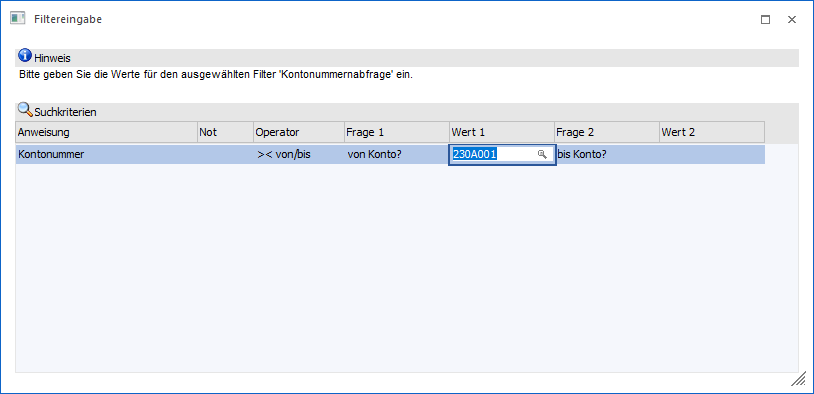

In der Tabelle "Suchkriterien" werden alle Bedingungen angezeigt die im Filter mit der "Option" Fragen versehen wurde, wobei folgende Informationen ersichtlich sind:
Ø Anweisung
In diesem Feld wird das Feld angezeigt, für das die Bedingung hinterlegt wurde.
Ø Not
Hier wird angezeigt, ob ggfs. die Option "Not" im Filter definiert wurde.
Ø Operator
Hier wird der Operator angezeigt. Dieser kann nur über den Filter geändert werden.
Ø Frage 1 / Frage 2
Wenn im Filter ein Text für den Wert 1 hinterlegt wurde (damit der Anwender weiß, welchen Wert er eingeben muss), wir dieser hier angezeigt.
Ø Wert 1 / Wert 2
In diese Felder können die Werte eingegeben, nach denen gefiltert werden soll. Handelt es sich dabei um Felder wie Kontonummer, Postleitzahl oder Artikelgruppe, so steht auch die Matchcodefunktion zur Verfügung.
Wenn es sich um Datumsfelder handelt, dann werden diese entsprechend geprüft bzw. kann mit der F9-Taste auch der Kalender geöffnet werden.
Wurde bei der Definition des Filters bereits ein Wert vorbesetzt, wird dieser auch gleich vorgeschlagen.
Buttons

Ø Ok
Durch Anklicken des Buttons "Ok" bzw. der Taste F5 werden die eingegeben Werte an den Filter übergeben, wodurch dann das Ergebnis des Filters ermittelt wird (für den Ausdruck der Liste oder für die Anzeige der Daten).
Ø Ende
Durch Drücken des Buttons "Ende" bzw. der Taste ESC wird das Fenster geschlossen. Die Ausgabe wird dann ohne Verwendung des Filters durchgeführt.